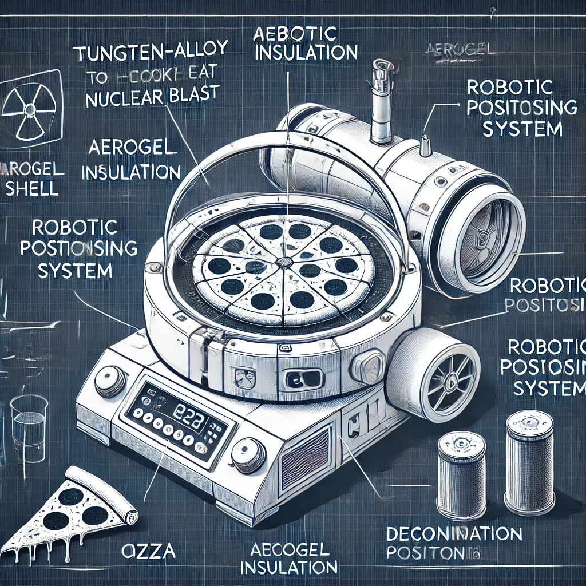

Goal
To develop a groundbreaking culinary system capable of utilizing the extreme thermal energy of a nuclear detonation to achieve precision cooking. By leveraging advanced thermal management technologies, dynamic positioning systems, and state-of-the-art materials engineering, this project aims to redefine the boundaries of high-temperature cooking and thermal energy utilization.
This initiative combines cutting-edge thermodynamics with robotics to ensure consistent, evenly cooked results while maintaining safety and control in the most challenging conditions imaginable. After all, if humanity can harness nuclear power for electricity and propulsion, why not for something truly vital—like pizza? Canned beans are no longer the apex of survival cuisine.
Summary
The Fallout Gourmet Oven represents humanity's crowning achievement in the field of "culinary thermodynamics" – because why not harness the unimaginable heat of a nuclear explosion to make dinner? This isn't just about survival; it's about taking the apocalypse and turning it into an opportunity for five-star dining.
Strategically positioned miles from ground zero (because no one likes crispy food AND crispy skin), this marvel of engineering uses cutting-edge robotics and heat distribution systems to produce gourmet-level meals under the harshest conditions. Thanks to dynamic positioning, phase-change materials, and shockwave mitigation, your pizza crust will come out perfectly crisp, even as the world around you disintegrates.
By redefining the limits of thermal energy application and showing off an uncanny ability to make anything sound plausible, the Fallout Gourmet Oven boldly asks: "If we can split atoms, why can’t we have artisanal breadsticks while doing it?" After all, the end of the world shouldn’t mean the end of good taste. Because when survival is at stake, there’s no reason to settle for anything less than perfection.
The Fallout Gourmet Oven: Technical Breakdown

1. Thermal Shielding and Insulation
- Outer Shell: Tungsten-alloy exterior (melting point: 6,192°F / 3,422°C) is designed to absorb initial thermal radiation. Its reflective coating mitigates direct heat absorption while maintaining structural integrity during peak energy transfer. Thickness: 15 cm.
- Middle Layer: Aerogel insulation provides exceptional thermal resistance (0.017 W/m·K), with a lifespan of 50 cycles before replacement. Lightweight yet robust, it ensures minimal heat penetration for consistent internal temperatures.
- Inner Layer: High-temperature ceramic optimizes heat distribution and resists prolonged exposure. Features micro-perforations for enhanced transfer.
- Heat Absorption Layer: Embedded molten salt phase-change material stores 250 kWh of excess thermal energy, releasing it gradually for stable cooking conditions.
2. Dynamic Positioning System
-
Starting Distance: The oven is deployed 5-7 miles from ground zero, calculated through advanced simulations that factor in blast radius, thermal energy dispersion, and atmospheric variables. These parameters ensure optimal heat absorption while preserving system integrity. Because there’s no point in gourmet pizza if your oven turns to ash.
-
Mobility System: Mounted on a reinforced high-torque robotic chassis, the oven can traverse rugged terrains and debris-filled landscapes—because the apocalypse doesn’t come with paved roads. Its mobility system integrates high-sensitivity thermal sensors with a detection threshold of ±0.5°F up to 1,500°F, GPS navigation accurate to 0.5 meters, and redundant communications to ensure uninterrupted positioning. This system remains operational even under electromagnetic pulse (EMP) events, thanks to shielded circuitry and a dedicated backup processor—because nobody wants a $10 million oven stuck in neutral.
-
Shockwave Mitigation: Engineered with gyroscopic stabilizers capable of countering peak ground accelerations up to 5 g, the oven maintains balance through seismic disturbances and shockwave interactions. Self-adjusting leveling actuators ensure that the cooking platform stays perfectly aligned, regardless of terrain deformations caused by the blast. After all, nothing ruins pizza like uneven toppings.
-
Autonomous Coordination: Powered by an onboard AI system, the oven processes thermal gradients, wind velocity, and seismic activity data at a computational rate of 1,000 operations per second. This allows real-time adjustments to maintain precise positioning in ever-changing environmental conditions, ensuring consistent heat exposure for cooking. Because when the ground’s shaking and radiation’s flying, precision is key.
-
Redundant Safety Systems: To safeguard operations, the oven’s mobility unit includes rapid deployment retractors, enabling immediate withdrawal if hazardous parameters are detected. A secondary stabilization anchor system deploys in emergencies to secure the oven against unexpected force surges or topographical instability—because your dinner deserves better than being upended by a rogue shockwave.
3. Advanced Thermal Management
-
Active Ventilation: Heat-regulating vents, controlled by an AI that probably knows more about cooking than you do, fine-tune internal temperatures with microsecond precision. These vents open and close faster than you can say "overcooked," ensuring that your gourmet pizza doesn’t end up resembling a charred relic of civilization. The system has an energy modulation accuracy of 0.1°F, because if we’re using nuclear heat, we’re not settling for guesswork.
-
Radiation Shielding: A multi-layered lead-composite shield blocks harmful radiation to keep your food safe and edible (as edible as post-apocalyptic pizza can be). Boron-infused polymers provide neutron absorption for that extra layer of safety—because who needs radioactive cheese pulls? Tested to reduce gamma radiation by 99.9%, this shielding is so effective it practically qualifies as overkill, but hey, better safe than glowing.
-
Temperature Sensors: Distributed throughout the cooking chamber, these sensors provide real-time data to the AI, allowing for absolute control over every inch of your meal. Each sensor, calibrated to a precision of ±0.5°F, transmits data at a blazing 10 Hz. That’s faster than you can debate whether anchovies belong on pizza. When dealing with nuclear heat, precision isn’t just preferred—it’s survival.
4. Cooking Strategy
-
Energy Utilization: The oven captures and stores the immense thermal energy generated during the nuclear blast's peak (approximately 3-5 seconds), harnessing an estimated energy flux density of 500 kW/m². It’s the ultimate in sustainable energy—provided you don’t count the crater. This energy is carefully stored and redistributed for a controlled, gourmet-level cooking experience, because your pizza deserves nothing less.
-
Heat Distribution: Using molten salt phase-change materials capable of retaining temperatures of up to 1,022°F, the oven ensures uniform heat distribution. Think of it as the Tesla of ovens: over-engineered, futuristic, and perfect for showing off to your post-apocalyptic neighbors.
-
Breadsticks First: As any true chef will tell you, breadsticks are the foundation of a good meal. The oven prioritizes these carb-loaded delights, cooking them for the first 10-12 minutes to achieve that perfect balance of crispiness and fluffiness. Even in the apocalypse, we have standards.
-
Then the Pizza: Once the breadsticks are done, the oven shifts focus to the pizza, maintaining a precise temperature of 425°F (218°C) for 15 minutes. The result? A crust that’s crispy on the outside, fluffy on the inside, and strong enough to hold whatever questionable toppings survived the fallout.
-
Final Results: The entire process is managed by an AI chef with more multitasking skills than your average human. From balancing thermal fluctuations to ensuring even heat distribution, the system guarantees every bite is perfection. Because when you’re cooking under extreme conditions, “close enough” simply isn’t good enough.
Advanced Features
-
Cheese Stretch Detector: Monitors cheese elasticity to ensure perfect pizza pulls. The sensor operates with an elongation detection range of 1-30 cm.
-
Garlic Butter Precision Dripper: Automated buttering brush for breadsticks, delivering 2 ml/sec of buttery goodness. A little luxury in the end times.
-
Blast-Infused Smoky Flavor: Sealed chamber captures ash-free essence of nuclear fireball for unique umami notes. Think barbecue, but with the power of a thousand suns.
-
Glow-in-the-Dark Crust (Optional): Activated by residual radiation for a luminous dining experience. Because who doesn’t want pizza that doubles as a nightlight?
5. Post-Cooking Retrieval
-
Decontamination Chamber: The oven is equipped with a high-efficiency filtration system that removes radioactive particulates from the food surface. Utilizing a combination of HEPA-grade filters and ionizing fields, this chamber ensures that your pizza and breadsticks remain edible, not glowing. With an operational efficiency of 99.97% for particles as small as 0.3 microns, it’s overkill—but hey, safety first in a radioactive wasteland.
-
Automated Food Retrieval System: A robotic arm, lined with lead-composite materials, delicately extracts your freshly cooked meal. Precision-engineered with 0.1 mm accuracy, it ensures that your breadsticks remain beautifully intact and your pizza isn’t tragically folded in half. The system’s secondary function as a defense mechanism against raiders is just a bonus. After all, nothing says “survival” like retrieving your dinner and warding off enemies at the same time.
Catchphrase in Action
"Fallout never tasted so good." When the world’s in ashes, but your pizza’s perfectly crispy, you’ll know you’ve made it. The Fallout Gourmet Oven doesn’t just cook—it defies the apocalypse with style and flavor.
Interactive Features
Blast Simulator
Click the simulator to experience the perfect nuclear cooking timeline. Each step brings you closer to gourmet-level pizza, even in the apocalypse!
Hover Animations
Hover over advanced features and technical details to uncover hidden insights and sarcastic tooltips that bring the Fallout Gourmet Oven to life!
Conclusion
The Fallout Gourmet Oven isn’t just a marvel of engineering; it’s a statement. A declaration that even in the most hostile environments, humanity will not only survive but thrive—with a slice of gourmet pizza in hand. By turning destruction into culinary perfection, the oven symbolizes our ability to adapt, innovate, and, most importantly, savor life even when the odds are stacked against us.
So, when the blast wave settles, and the dust clears, remember: survival is more than just living—it’s about living deliciously. Next time the world ends, rest assured that your pizza will still be perfectly crisp and your breadsticks golden brown.
After all, Fallout never tasted so good.